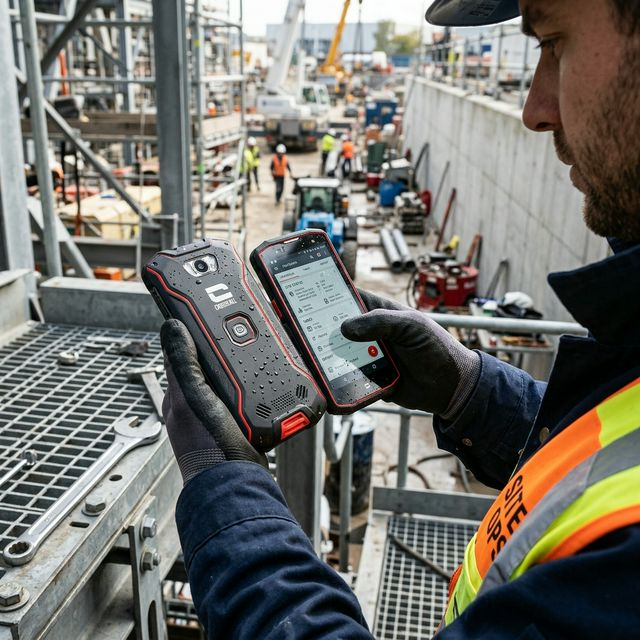

Expérience : Stage 2
Présentation de l'Entreprise (Prosol)

ℹ️ Informations Clés
📅 Création : 24/10/2005
📍 Adresse :
375 RUE JULIETTE
RECAMIER
69970 CHAPONNAY
💰 Chiffre d'affaires :
Plus de 4 milliards d'euros
🏢 Vue d'ensemble – Organisation GIE
1️⃣ Activité & Périmètre Produits
Prosol est une entreprise française spécialisée dans la distribution alimentaire.
- 🧺 Catégories gérées : Produits frais (GF 330), Caisses, Épices, Dépannage.
- 🛒 Rayons : Fruits & Légumes (F&L), Crèmerie, Marée / Poissonnerie.
👉 Prosol (≈ 78 % de l’activité) est le cœur de l’activité, concentrant l’essentiel des flux, des volumes et des besoins IT/logistiques.
2️⃣ Réseau de Magasins
Total : 67 magasins
- BDD – Boulogne du Nord : 25
- Banco Fresco : 8
- PanF : 10
- Autres enseignes complétant le réseau
👉 Ce réseau alimente la majorité des flux frais, nécessitant une forte réactivité logistique et IT.
3️⃣ Volumes & Indicateurs
- 💻 ~10 000 PRC (Postes Clients) : Ordinateurs employés (caisses, bureaux, magasins).
- 🖥️ ~5 460 PRS (Postes Serveurs) : Serveurs hébergeant services & bases de données.
👉 Ces gros volumes exigent une forte robustesse IT.
4️⃣ Logistique & Industriel
- 🚚 13 plateformes logistiques en France
- 🏭 Usines partenaires : ADF (Cabrès → Nantes), AFL (Avignon), LCFN (Annecy), BDI (Boulogne Nord)
👉 La logistique est multi-sites, avec des flux tendus, notamment sur les produits frais → dépendance forte à l’IT.
5️⃣ Organisation IT
≈ 50 personnes (Horaires : 7h30 → 19h)
🧩 Domaines IT : Annexe, Maintenance logicielle, Socle Data, Réseau, Sécurité, Systèmes, Applicatif, Outils, Cloud & projets transverses.
👉 L’IT est structurée par expertises métiers et techniques, couvrant toute la chaîne de valeur (y compris la centralisation Data).
☁️ Infrastructure Serveurs
| Caractéristique | Détails de l'infrastructure |
|---|---|
| Nombre de serveurs | Environ une centaine (~ 100 serveurs) |
| Environnement | 100% basé dans le Cloud (Microsoft Azure) |
| Résilience | Ils sont tous dédoublés (redondance forte en cas de panne) |
Annexe
Applications et tâches réalisées
iTOP

🎫 iTOP est l'outil de ticketing ITSM de l'entreprise. Il centralise la gestion des incidents, des équipements réseau et des adresses IP.
👉 Chaque demande ou panne passe par iTOP pour être tracée, assignée et résolue.
CATO Networks

🌐 CATO Networks est la plateforme SASE de l'entreprise. Elle remplace les VPN et MPLS en combinant réseau WAN et cybersécurité dans le cloud.
👉 SD-WAN, ZTNA, Firewall cloud, protection anti-malware — tout en un, géré centralement.
Nouvel arrivant

💻 Masterisation : Configuration automatisée d'un PC neuf ou réinitialisé (OS, logiciels, sécurité, réseau).
👉 Permet de livrer un poste de travail standardisé et prêt à l'emploi en quelques clics.
Crosscall

📱 Crosscall : Téléphone étanche et très solide, utilisé dans les milieux professionnels.
👉 Conçu pour résister aux chocs et aux conditions extrêmes sur le terrain.
Zebra ZQ521

PDA Scanner

📲 PDA Scanner : Terminal mobile pour scanner les produits et gérer les stocks en temps réel.
Branchement et config switch

Intervention
Imprimantes (Xerox)

Écran Dell

Écran Supervision

Réseau et Sécurité
Applications et tâches réalisées
SIGALE

📦 SIGALE est l'ERP central de l'entreprise. Il gère l'ensemble des flux : stocks, logistique, achats, et traçabilité.
👉 Tous les terminaux (PDA, Zebra, PC) communiquent avec SIGALE pour fonctionner.
Password Manager

🔑 Bitwarden est le gestionnaire de mots de passe de l'entreprise. Il stocke et génère des mots de passe forts chiffrés (AES-256) pour tous les comptes.
👉 Un seul mot de passe maître suffit pour accéder à tous les accès, en toute sécurité (2FA inclus).
Cybereason EPP

🛡️ Cybereason est l'outil de cybersécurité qui détecte et bloque les menaces en temps réel sur tous les postes de l'entreprise.
🧠 SOC (Security Operations Center) = l'équipe humaine qui surveille les alertes, analyse les attaques et décide des actions à mener.
👉 SOC = les humains | Cybereason = l'outil technologique
🔎 Cybereason détecte → 🧠 Le SOC décide → 🛑 Le SOC agit.
Workday (ERP SIRH)

☁️ Workday est l’ERP RH cloud gérant les collaborateurs.
🔑 Tâche réalisée : Réinitialisation de mots de passe suite aux demandes utilisateurs.
Application Omni

🗺️ Application Omni est l'outil de supervision centralisée. Il permet de visualiser en temps réel l'état de tous les équipements et magasins sur une carte interactive.
👉 Détecter une panne, suivre une livraison, voir l'état du réseau — tout depuis un seul écran.
Active Directory & Contrôle d'exploitation

- Active Directory : Créer un utilisateur dans l’AD.
- Contrôle d'exploitation : Réguler les comptes AD pour que leur matricule ressorte correctement.
Microsoft Exchange

Exchange : Ajout de personnes dans une salle de réunion pour qu'elles puissent l'utiliser et la réserver en cas de besoin.
Balance Cholet

Balance Cholet : Configuration et paramétrage de tares dans la balance.
Conclusion
🛡️ Cybersécurité : Protection des données et du réseau de l'entreprise.
📡 Réseaux : Gestion des équipements et de l'infrastructure Cloud.
👤 Autonomie : Capacité à diagnostiquer et résoudre les incidents seul.
⚙️ Technicité : Utilisation quotidienne d'outils pro de haut niveau.
🤝 Travail d'équipe : Collaboration efficace au sein d'une DSI structurée.